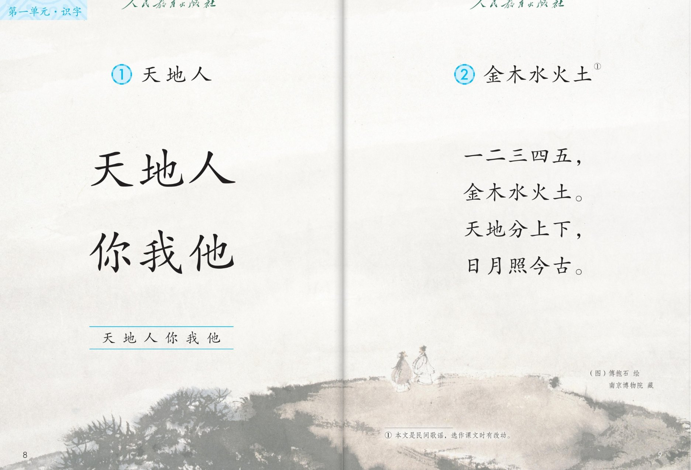

×
🔊 手机听不到声音怎么办？
① 先把手机
媒体音量调大，确认没开静音、没连蓝牙耳机；在微信里打开的，点右上角「⋯ → 用浏览器打开」。
② 还是没声音？到应用商店免费下载
Microsoft Edge 浏览器（它自带朗读发声），用它打开本页面就能出声。
③ 换了 Edge 仍然没声音，说明这部手机的
硬件/系统不支持网页朗读（多为老旧机型）；近几年买的新手机一般都能正常播放。
→ 打开声音自检
统编版 · 一年级上册 · 第一单元 · 识字
第 1 课 · 天地人
认一认六个大字：天 地 人 你 我 他
课本第 8 页，点哪个字听哪个字
会认 6 字指一指游戏闯关 8 题
这一课学什么：只认字，不写字——天、地、人、你、我、他。配图是画家傅抱石的山水画（南京博物院藏）。
页面上的拼音按字典标注，供参考，以课本和老师教的为准。点一下任一句子或字卡，就能听。
① 读一读 · 六个大字
课本第 8 页点一行读一行
天地人
你我他
（图）傅抱石 绘 · 南京博物院藏
② 认一认 · 会认 6 个字
点字卡听读音和组词
③ 指一指 · 想一想
说一说 · 用上"你我他"
你是我的好朋友。
我是小学生。
他在拍皮球。
💡 我说自己，你说对方，他说另外的人。三句话轮着说，就不会说错啦。
照样子说：“你叫什么名字？”“我叫明明。”“他是我的同桌。”
想一想：天在上面，地在下面，我们人就住在天地之间——抬头看是天，低头看是地。
④ 闯关 · 8 题
点题目可以听题，点选项就判对错，答完自动算分
已经答 0 题，答对 0 题。
课本原页 · 第 8~9 页点图放大

第 8~9 页 · 天地人 · 金木水火土